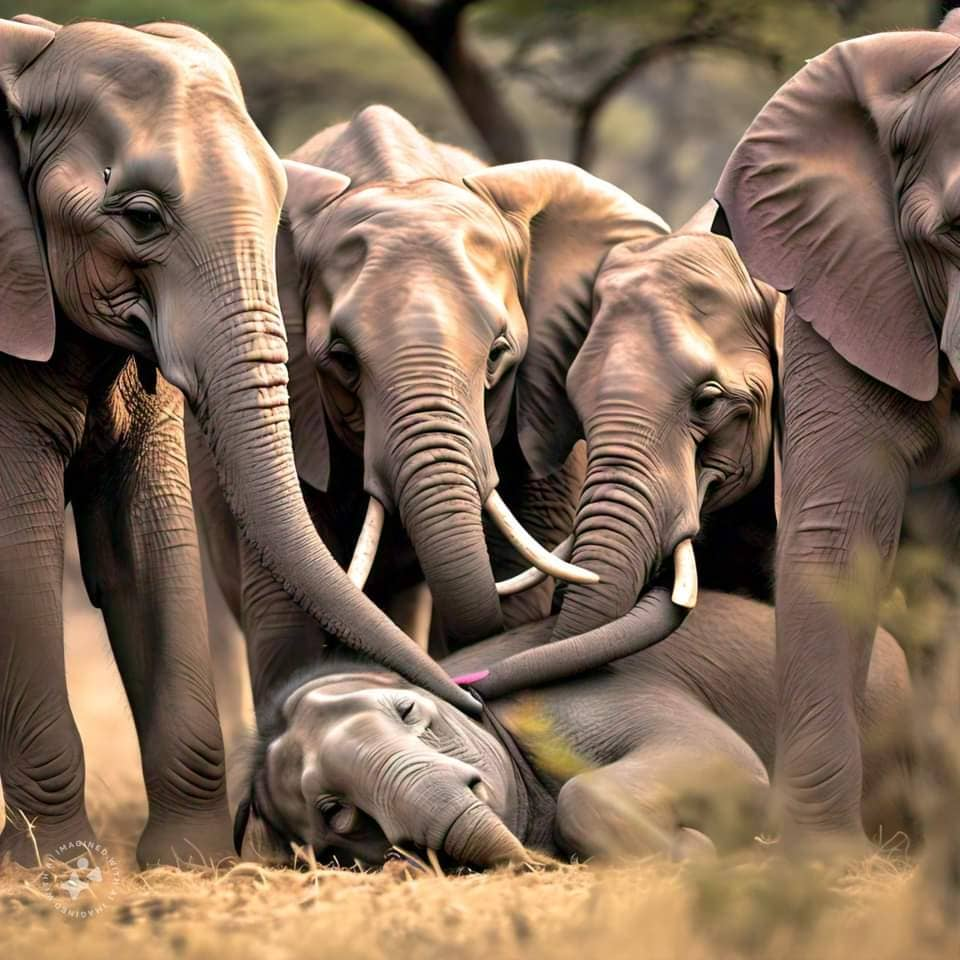
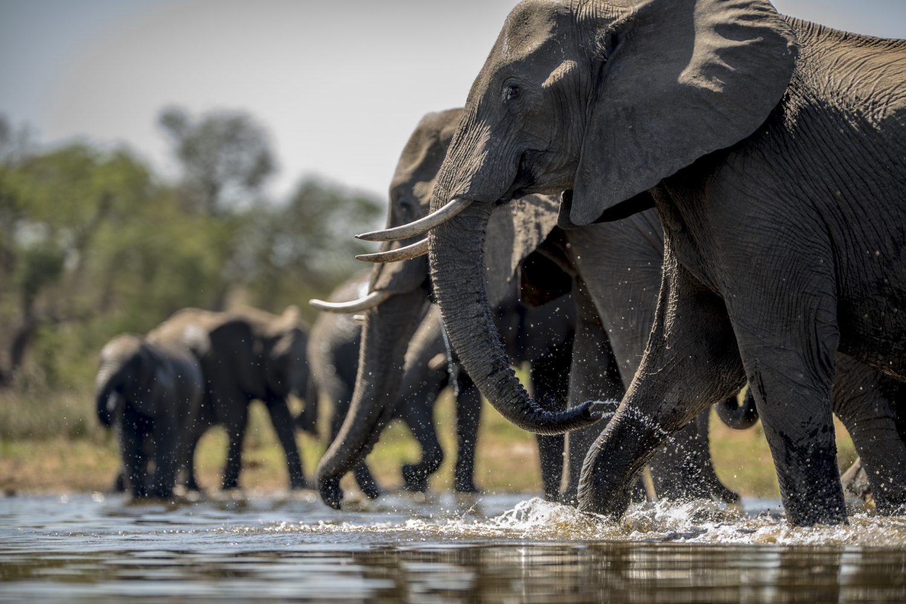

.png)
.png)
Daniel Vincent | 17 Nov, 2024

In the vast tapestry of the animal kingdom, few creatures evoke as much awe and reverence as the elephant.
These gentle giants, with their massive frames and intricate social structures, have captivated human imagination for centuries.
Yet, beyond their imposing size and iconic trunks lies a world of subtlety and complexity that often goes unnoticed.
At first glance, the elephant’s physicality is what captures our attention—their towering stature, large ears that resemble sails, and the remarkable dexterity of their trunks.
However, it is their emotional depth that truly sets them apart.
Elephants are known for their profound social bonds, exhibiting behaviors that suggest a rich emotional life.
They grieve for their dead, often touching the bones of deceased companions with their trunks and displaying signs of mourning that can last for days.
This capacity for empathy extends beyond their own species.
Observations have documented elephants coming to the aid of distressed animals, regardless of species.
In one remarkable instance, a herd of elephants was seen helping a trapped baby hippo, demonstrating an understanding of suffering that challenges our perceptions of animal intelligence
While elephants are known for their trumpeting calls, their communication extends far beyond what meets the ear.
They engage in a sophisticated system of vocalizations, body language, and even seismic vibrations.
Elephants can produce low-frequency rumbles, called infrasound, which travel long distances and can be detected by other elephants miles away.
This form of communication allows them to coordinate movements, signal danger, or even find mates, all without a single audible sound to human ears.
Moreover, the subtleties of their body language—such as the position of their ears, the sway of their trunks, and the angle of their tusks—convey a wealth of information.
A relaxed trunk may signal calmness, while a raised head can indicate alertness.
Understanding these nuances offers a glimpse into the intricate social dynamics of elephant herds
The phrase "an elephant never forgets" is more than just a saying; it reflects the extraordinary memory these creatures possess.
Elephants have the ability to remember locations, individuals, and even complex social interactions over decades.
This remarkable memory is crucial for their survival in the wild, enabling them to navigate vast landscapes, locate water sources, and recall the whereabouts of friends and foes.
Research has shown that matriarchs, the elder female leaders of herds, play a pivotal role in this memory network.
Their experiences shape the herd’s knowledge base, guiding younger elephants through challenges and dangers.
The loss of a matriarch can have profound effects, disrupting the herd’s social structure and survival strategies.
The Call to Action As we marvel at the majesty of elephants, we must also confront the harsh realities they face.
Habitat loss, poaching for ivory, and human-wildlife conflict threaten their existence.
The plight of elephants serves as a poignant reminder of our responsibility to protect these sentient beings and their ecosystems.
Conservation efforts are critical, not only for the survival of elephants but for the health of the entire environment.
Elephants are considered a keystone species; their movements and foraging habits help shape the landscapes they inhabit.
By protecting elephants, we safeguard the intricate web of life that depends on them.
In many cultures, elephants symbolize wisdom, strength, and loyalty.
They are revered in mythology and folklore, often depicted as guardians of the earth.
As we seek to understand these magnificent creatures, we are reminded of the lessons they impart—about community, empathy, and the delicate balance of our ecosystems.
In the quiet moments, when we observe elephants in their natural habitat, we are invited to reflect on our own connections to the world around us.
Their silent presence speaks volumes, urging us to listen, learn, and act.
As we strive to coexist with these incredible beings, let us carry forward their legacy of wisdom, ensuring that future generations can also marvel at the silent giants of our planet